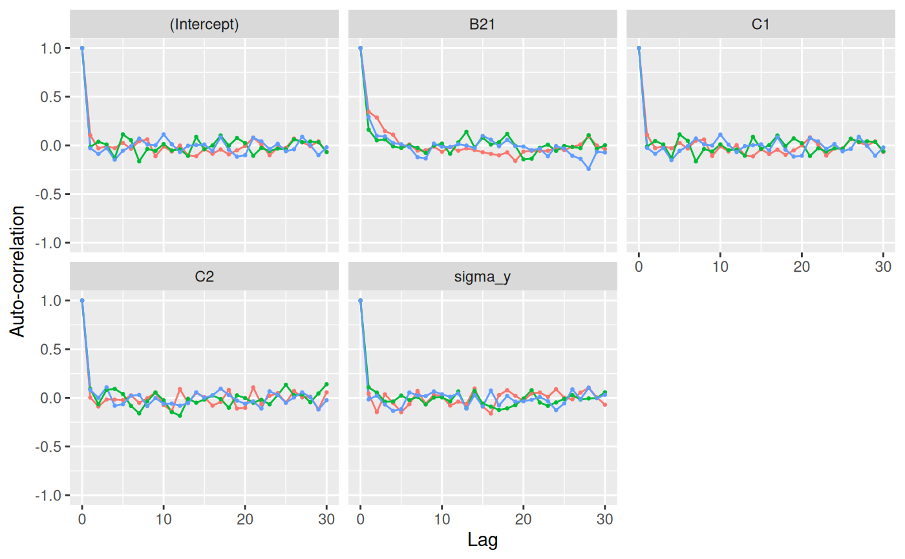

This function obtains the autocorrelation of the MCMC samples in an JointAI
object via coda::autocorr.diag(). autocorr_plot() visualizes the results
using ggplot2.
Usage
auto_corr(object, lags = 0:30, by_chain = TRUE, outcome = NULL,
start = NULL, end = NULL, thin = NULL)
auto_corr_plot(object, lags = 0:30, by_chain = TRUE, outcome = NULL,
start = NULL, end = NULL, thin = NULL)Arguments
- object
an object of class JointAI
- lags
a numeric vector indicating the lags to consider
- by_chain
logical; should the autocorrelation be computed for each chain separately?
- outcome
optional; vector identifying the sub-models whose parameters are included, either by their indices (in the order of the list of model formulas) or their names (LHS of the respective model formula as character string). If
NULL(default), all monitored parameters are included. With parameters from several sub-models, the coefficients are named"outcome: variable", otherwise by the variable only.- start
the first iteration of interest (see
window.mcmc)- end
the last iteration of interest (see
window.mcmc)- thin
thinning interval (integer; see
window.mcmc). For example,thin = 1(default) will keep the MCMC samples from all iterations;thin = 5would only keep every 5th iteration.
Value
a matrix or a list of matrix objects if by_chain = TRUE, or
a ggplot() object for autocorr_plot().
Examples
fit <- lm_imp(y ~ C1 + C2 + B2, data = wideDF, n.iter = 200)
auto_corr(fit)
#> [[1]]
#> (Intercept) C1 C2 B21 sigma_y
#> Lag 0 1.000000000 1.0000000000 1.000000000 1.000000000 1.000000000
#> Lag 1 0.103391788 0.1085335621 0.003253331 0.344331602 0.044079623
#> Lag 2 -0.030165892 -0.0275346571 -0.088364302 0.285870264 -0.145817551
#> Lag 3 -0.008801165 -0.0094839399 -0.015985068 0.147534911 0.035942415
#> Lag 4 -0.028019351 -0.0297908246 -0.016729934 0.110128979 -0.051671566
#> Lag 5 0.025384031 0.0258064214 -0.022467098 -0.010720069 -0.147253560
#> Lag 6 -0.034828456 -0.0323683936 0.025408259 0.009680730 -0.064731370
#> Lag 7 0.043474332 0.0489806765 -0.051294438 -0.054034502 0.070647803
#> Lag 8 0.061761317 0.0603827983 -0.003300390 -0.050236201 -0.060766725
#> Lag 9 -0.111533845 -0.1086781198 0.055606139 -0.013123013 0.032310949
#> Lag 10 -0.012376485 -0.0092196934 -0.073940639 -0.065470646 0.018117378
#> Lag 11 -0.062236417 -0.0624380522 -0.135233298 -0.016928522 -0.079239080
#> Lag 12 -0.001545004 0.0024232892 0.089954823 -0.055072418 -0.039568520
#> Lag 13 -0.102385795 -0.1032475956 -0.053204491 -0.030289224 -0.063489935
#> Lag 14 -0.111311927 -0.1129245639 0.052093777 -0.047284407 0.096182619
#> Lag 15 -0.037914916 -0.0399679762 0.007018812 -0.070931178 -0.089177980
#> Lag 16 -0.086200830 -0.0892694362 -0.080082785 -0.087056013 -0.160607062
#> Lag 17 -0.041642702 -0.0438012786 -0.042304252 -0.101350052 0.028057790
#> Lag 18 -0.092380453 -0.0970214918 0.081573793 -0.072050354 0.079090983
#> Lag 19 -0.050627168 -0.0515975087 -0.109122797 -0.159251333 0.021445184
#> Lag 20 -0.005464360 -0.0001129845 -0.102698670 -0.063661138 -0.030978425
#> Lag 21 0.080452078 0.0825334178 0.107274494 -0.056385185 0.045840049
#> Lag 22 0.008322052 0.0115536605 -0.065119779 -0.056127897 0.055013774
#> Lag 23 -0.100950262 -0.1047679450 0.020845711 -0.055554354 0.009876085
#> Lag 24 -0.025648317 -0.0318327188 0.047839924 -0.029043968 0.088687023
#> Lag 25 -0.025341193 -0.0318918462 -0.048983577 -0.047488290 0.002402822
#> Lag 26 0.069905101 0.0647785829 0.070495360 -0.015478175 -0.014458808
#> Lag 27 0.031875434 0.0315155131 0.005571820 0.009250594 0.053972273
#> Lag 28 -0.007411781 -0.0009770624 0.011035781 0.091931442 0.104345257
#> Lag 29 0.040558661 0.0406066632 -0.116279988 -0.001724145 0.005077676
#> Lag 30 -0.066595508 -0.0671239728 0.056131272 -0.038367610 -0.070314569
#>
#> [[2]]
#> (Intercept) C1 C2 B21 sigma_y
#> Lag 0 1.000000000 1.000000000 1.000000000 1.000000e+00 1.000000000
#> Lag 1 -0.016277036 -0.011648556 0.091211105 1.610167e-01 0.108005241
#> Lag 2 0.037311223 0.045020479 -0.066260848 5.242586e-02 0.053488017
#> Lag 3 0.008912230 0.009624734 0.083634870 6.148277e-02 -0.038622634
#> Lag 4 -0.130081931 -0.129292972 0.092068768 -9.918207e-03 -0.037436310
#> Lag 5 0.112919953 0.112093039 0.040306682 -2.579578e-02 0.024039840
#> Lag 6 0.053144024 0.047832508 -0.082536618 -3.405833e-05 -0.022312022
#> Lag 7 -0.164151569 -0.164613252 -0.159362182 -2.530392e-02 0.011023507
#> Lag 8 -0.037197999 -0.037510022 -0.034993092 -7.729171e-02 -0.067496522
#> Lag 9 -0.055609745 -0.062197072 0.054462292 -2.658514e-03 0.003567705
#> Lag 10 0.013297051 0.010575188 -0.025375851 1.800150e-02 0.005608057
#> Lag 11 -0.052923700 -0.049395016 -0.145186542 -8.583919e-02 -0.036062220
#> Lag 12 -0.040994025 -0.042311734 -0.183238587 3.064504e-02 0.065559129
#> Lag 13 -0.107612433 -0.105692331 -0.009422052 1.400177e-01 -0.108570563
#> Lag 14 0.087917671 0.088040261 -0.049531837 -2.088859e-02 0.071498152
#> Lag 15 -0.040735559 -0.036999150 -0.018332417 7.912717e-02 -0.059175787
#> Lag 16 -0.001113242 0.002528960 0.024219099 9.083091e-03 -0.089635293
#> Lag 17 0.102025002 0.101786696 -0.011868809 3.218940e-02 -0.123895824
#> Lag 18 -0.002865934 -0.005858289 -0.101608838 1.182634e-01 -0.107446102
#> Lag 19 0.075392477 0.072074458 0.025943433 -4.254394e-03 -0.074927414
#> Lag 20 0.024398011 0.022758425 -0.002486130 -1.432541e-01 -0.007622231
#> Lag 21 -0.106569934 -0.108866544 -0.049816044 -1.365333e-01 0.078666087
#> Lag 22 -0.025481444 -0.029959612 -0.018269159 -2.451035e-02 -0.047617451
#> Lag 23 -0.059040859 -0.062685533 -0.066544195 7.184990e-03 -0.081944495
#> Lag 24 -0.032436875 -0.029915376 0.029018286 -5.668896e-02 -0.047009641
#> Lag 25 -0.041102404 -0.034724091 0.134575187 -5.278615e-03 -0.010113022
#> Lag 26 0.061813142 0.069450140 0.026996905 -1.652894e-02 0.028689049
#> Lag 27 0.033225523 0.036291001 0.033868815 -2.756975e-02 -0.017826710
#> Lag 28 0.039671722 0.041737366 -0.045158456 1.049717e-01 -0.006341400
#> Lag 29 0.033666195 0.035769134 0.045194515 -3.547402e-02 -0.001434331
#> Lag 30 -0.068764581 -0.061268177 0.139724663 1.640232e-03 0.057097171
#>
#> [[3]]
#> (Intercept) C1 C2 B21 sigma_y
#> Lag 0 1.0000000000 1.000000000 1.0000000000 1.000000000 1.000000000
#> Lag 1 -0.0289566453 -0.024291803 0.0818829181 0.291567947 -0.015988849
#> Lag 2 -0.0877633744 -0.086446569 0.0003112824 0.097616637 0.021626388
#> Lag 3 -0.0276151367 -0.026642006 0.1076119646 0.092138906 -0.067421624
#> Lag 4 -0.1468957950 -0.151326706 -0.0808599551 0.024676591 -0.134215333
#> Lag 5 -0.0551723746 -0.056303631 -0.0659793695 0.011951577 -0.116948445
#> Lag 6 -0.0091577553 -0.007923147 0.0207817065 -0.018179361 0.054948289
#> Lag 7 0.0699008293 0.070713983 0.0301915762 -0.120904333 0.025276424
#> Lag 8 0.0102498142 0.010785727 -0.0835888326 -0.134361141 0.017153549
#> Lag 9 0.0002718901 -0.001604542 -0.0025287420 0.018091871 0.065825272
#> Lag 10 0.1126938390 0.110914780 -0.0604183935 -0.013591363 0.036791516
#> Lag 11 0.0125868684 0.007974709 -0.0589296725 -0.016161237 0.010547571
#> Lag 12 -0.0676187229 -0.069246597 -0.0812762271 0.012670263 0.045981615
#> Lag 13 -0.0032965671 -0.006912088 -0.0523901282 -0.001708151 -0.109398670
#> Lag 14 0.0034932479 0.001369148 0.0567809990 -0.026494678 0.028090055
#> Lag 15 0.0088938195 0.010827511 0.0013392050 0.096869367 -0.087032110
#> Lag 16 -0.0563073130 -0.051956579 0.0251714824 0.058503899 0.075549617
#> Lag 17 0.0837347380 0.084394028 0.0942245437 -0.008528060 -0.077233341
#> Lag 18 -0.0442771629 -0.043899637 0.0287984183 0.056971565 0.019460950
#> Lag 19 -0.1155082169 -0.114811038 -0.0280249037 -0.006890507 -0.039544610
#> Lag 20 -0.1011001173 -0.106235947 -0.0608174648 -0.012154342 -0.035031412
#> Lag 21 0.0771975992 0.074457196 -0.0363471147 -0.049961372 -0.018953014
#> Lag 22 0.0414091326 0.040178901 -0.1097519714 -0.033325123 0.009772905
#> Lag 23 -0.0387766083 -0.037667058 0.0669876295 -0.111946960 -0.033414547
#> Lag 24 0.0166289438 0.014528178 0.0308896951 -0.006810497 -0.125916972
#> Lag 25 -0.0601748908 -0.060184696 -0.0507458600 -0.032471432 -0.057231714
#> Lag 26 -0.0404612755 -0.037073767 0.0047811468 -0.107604248 0.087206262
#> Lag 27 0.0888435063 0.088355251 0.0563242798 -0.137686143 -0.014206107
#> Lag 28 0.0016408289 -0.003822542 0.0073849142 -0.241545838 0.103604504
#> Lag 29 -0.1000782205 -0.106435057 -0.1193049932 -0.065157993 -0.004113341
#> Lag 30 -0.0202399689 -0.021493066 -0.0244377462 -0.073296537 0.031442558
#>
auto_corr_plot(fit)
